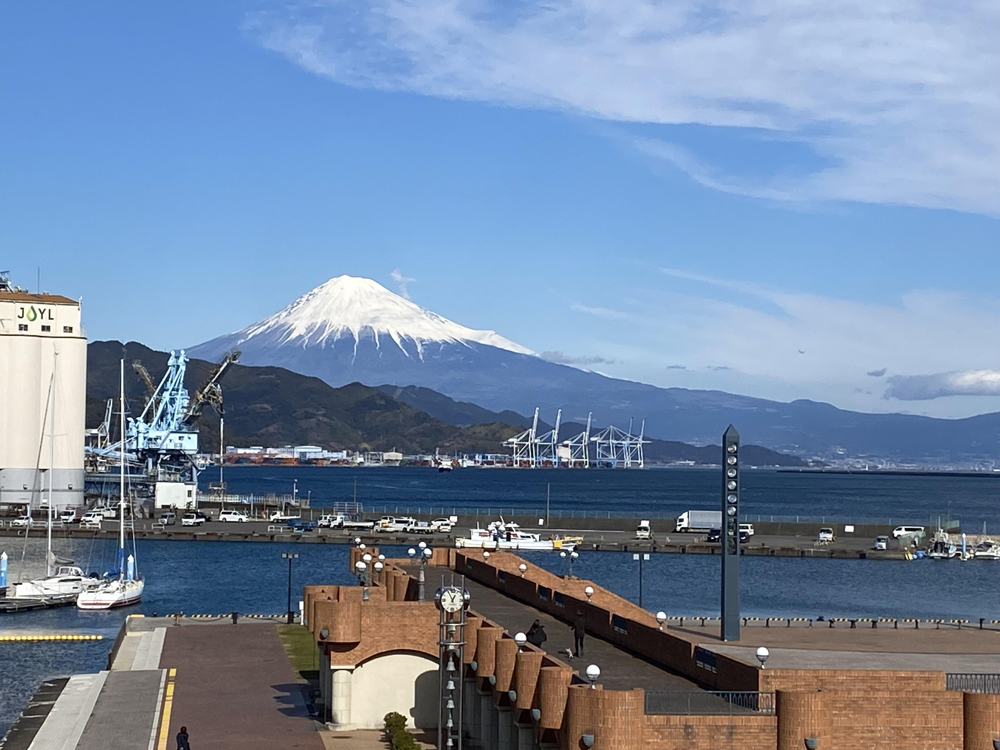
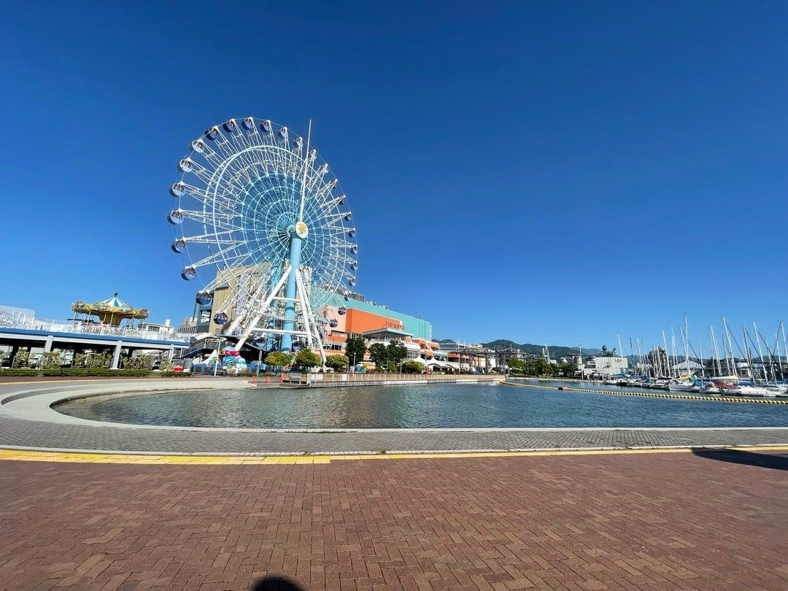
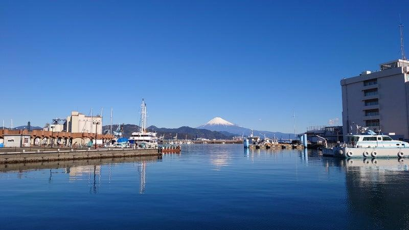

絶景名所🔍 詳細を見る
三保松原と富士山
松林、青い海、雄大な富士山が調和する日本新三景の絶景。
富士山、新鮮な海の幸、歴史ある港町の魅力を体感しよう。
カードをクリックすると詳しい説明と写真が開きます

絶景名所松林、青い海、雄大な富士山が調和する日本新三景の絶景。
 ショッピング
ショッピング
観覧車、グルメ横丁、映画館、お土産が揃う海辺のエンタメ施設。
 クルーズ
クルーズ
船上デッキから海越しの富士山と港のパノラマを堪能できるクルーズ。

ハーバーヨットが並ぶ港の遊歩道。心地よい海風を感じるリゾート空間。
カードをクリックすると詳しい説明と写真が開きます
 多彩なグルメ
多彩なグルメ
桜えびやかき揚げ、麺類、定食から静岡抹茶スイーツまで何でも揃うグルメスポット。
 カルチャー
カルチャー
名作アニメの世界観に浸れる、清水ならではの人気ミュージアム。
清水の見どころを効率よく巡る日帰り観光プラン
朝の澄んだ空気の中で、青い海と富士山をバックに記念撮影。
駿河湾名物の桜えび、生しらす丼や定食をお腹いっぱい堪能。
アニメの世界を体験した後は、遊覧船に乗って爽快な海上散歩へ。
夕日に染まるヨットハーバーを眺めながらゆったり旅を締めくくり。
主要交通機関からのアクセス情報
ルート案内図:

歴史と富士の絶景、海の幸を満喫する静岡・清水のスペシャルな旅
主催： 中部コンピュータ・パティシエ専門学校 様
旅行日程： 令和8年9月12日 (土) 日帰り
集合・出発： 学校前 08:45配車 / 09:00発
人員・担当： 22名 (第一観光 広瀬重人様)

駿河湾クルーズ（清水港）：潮風を感じながら約40分間の船旅。世界遺産の富士山を一望。

三保の松原：青い海と緑の松林、富士山が織りなす「羽衣伝説」の舞台を爽快に散策。

久能山東照宮：徳川家康公が眠る最初の神社。極彩色の国宝社殿と駿河湾の絶景。
中型バスに乗車し、豊川ICより新東名高速道路経由で清水へ向かいます。
「はとばキッチン」にて、新鮮な地元食材を使った大人気ビュッフェランチを満喫（11:40〜）。
清水港を出航！爽やかな潮風と海の絶景を船上から楽しみます。
白砂青松と富士山のビューポイントを巡りながら散策します。
久能山下駐車場を利用し、徳川家康ゆかりの国宝社殿を見学します（16:20発）。
久能山ICより帰路へ（途中サービスエリア休憩）。18:30豊川IC着、19:00学校前到着・解散。
⚠️ ご旅行上の注意・ご案内：
この日程表は令和8年8月7日現在のスケジュールです。お客様の安全確保の為、バス走行中は常にシートベルトの着用をお願い致します。